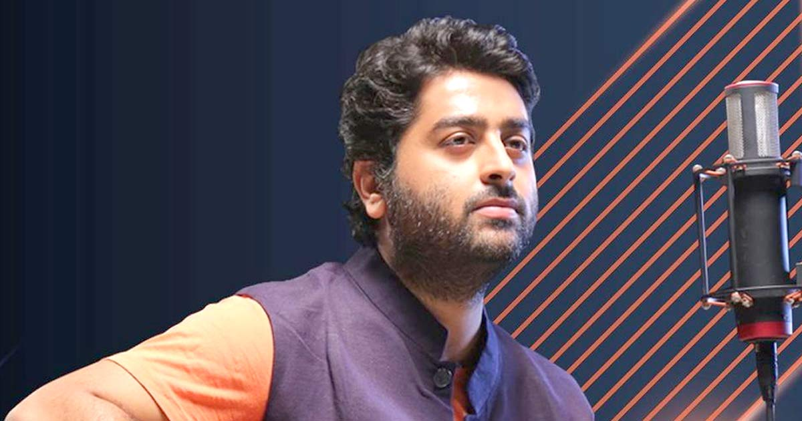
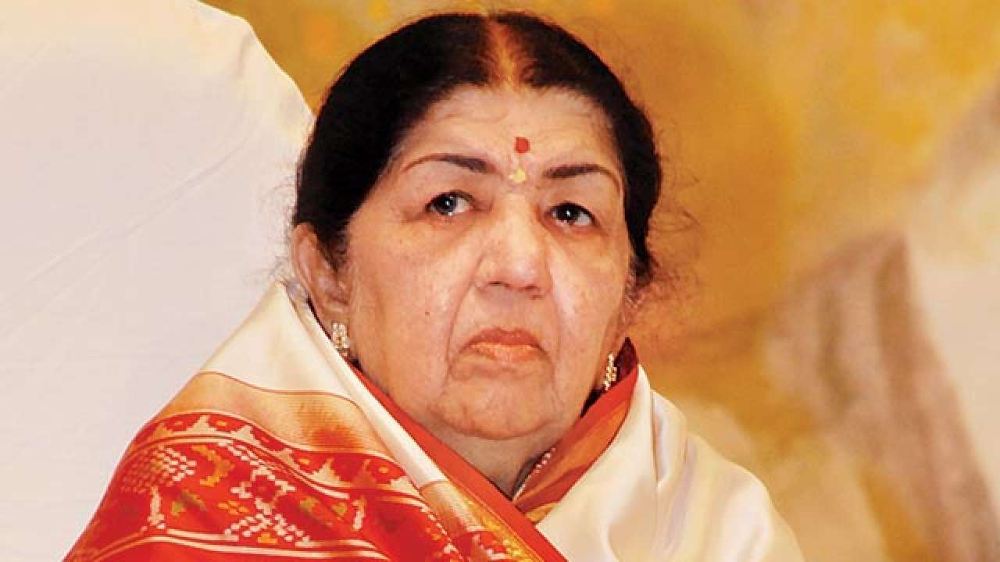
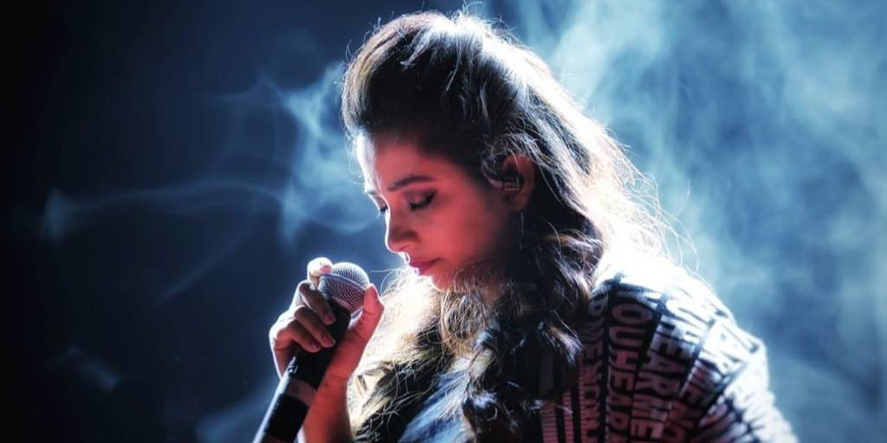
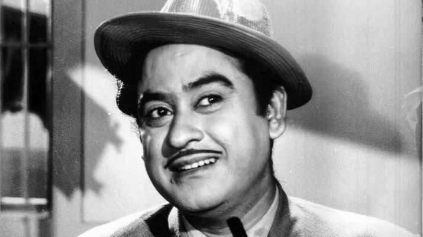

Essence of
Music
Home
Instrument
Inspiration
Login
Inspirational Singer's
We've gathered some Inspiration for you.

Arijit Singh
Arijit Singh is an Indian playback singer and a music programmer and was born in Jiaganj, Murshidabad, West Bengal to a Punjabi father and a Bengali mother. He initiated training in music from his house, since his maternal grandmother used to sing and his maternal aunt is trained in Indian classical music. His maternal uncle also plays the tabla. He also learnt music from his mother who sings and plays the tabla. For studies, he went to Raja Bijay Singh High School and Sripat Singh College, a University of Kalyani affiliate. According to Singh he "was a decent student, but cared more about music". His inclination towards music led his parents to decide on training him professionally. He was taught Indian classical music by Rajendra Prasad Hazari and trained in tabla by Dhirendra Prasad Hazari while Birendra Prasad Hazari taught him Rabindra Sangeet and pop music. His career began upon participating in the reality show Fame Gurukul (2005), in which he lost at the finals. After winning another reality show called 10 Ke 10 Le Gaye Dil, Singh built a recording setup of his own, beginning his journey with music programming. Subsequently, he went to become as an assistant music programmer to Pritam Chakraborty, Shankar-Ehsaan-Loy, Vishal-Shekhar and Mithoon.

Lata Mangeshkar
Lata Mangeshkar, also known as the 'Nightingale of India', was one of the most versatile singers in the Indian film industry. Lata was born on September 28, 1929, to classical singer and theatre artist Pandit Deenanath Mangeshkar and Shevanti in Indore, Madhya Pradesh. Her father started teaching her music at an early age. By the time she was five, Lata was seen participating as an actress in plays written by her father. Her siblings - Meena, Asha, Usha, and Hridaynath - are all accomplished singers and musicians. In a career spanning nearly eight decades, Lata Mangeshkar was the singing voice for a bevy of Bollywood leading ladies. She lent her voice to over 5,000 songs in over a thousand Hindi and 36 regional films. She had an unprecedented impact on Indian film music. Since 1942, Lata pushed back the boundaries of music with her mind-boggling skills. Over the years, Lata had sung for actresses from Madhubala to Priyanka Chopra. Best known for her versatile voice quality, she recorded albums of all kinds.

Shreya Ghoshal
Shreya Ghoshal or Shreya Ghosal is an Indian playback singer. She performed several songs in Bollywood, regional films and also for Indian soaps like Kasturi. Besides Hindi, she has also sung songs in Bengali, Kannada, Malayalam, Marathi, Punjabi, Tamil and Telugu. She caught the attention of film director Sanjay Leela Bhansali when she participated in Sa Re Ga Ma Pa for the second time, this time competing against adults. In 2000, he offered her the opportunity to be the voice of Paro, the lead female character of his film Devdas, who was to be portrayed by Aishwarya Rai. Shreya sang five songs in the film.

Kishore Kumar
Kishore Kumar was an actor, and playback singer in Bollywood films. He was most active from 1949 until his death in 1987. He was famous for singing upbeat light songs, and light comical acting roles. However in his long career, he worked in almost every capacity in the film industry; not only as a a singer and actor but as a screenwriter, producer, director, and script writer. Kishore Kumar was born Abhas Kumar Ganguly on August 4, 1929 in Khandwa (present day Madhya Pradesh). Although this is a Hindi speaking area he was a Bengali. His father was a lawyer named was Kunjilal, and his mother's name was Gouri Devi. He was one of four children. He had two older brothers named Ashok Kumar and Anoop Kumar, and a younger sister named Sati.